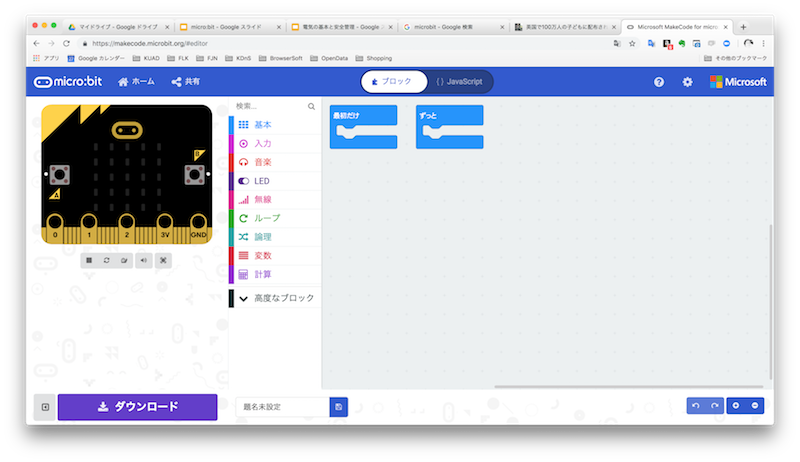
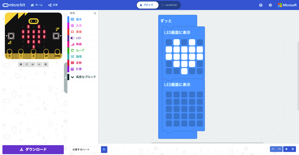

micro:bitとは？
イギリスのBBC（英国放送協会）が開発した，情報教育のためのシングルボードコンピュータ.
3つのI/Oリング，20ピンのエッジコネクタを備え，複数個のセンサーが内蔵されている．
BLE(Bluetooth Low Energy)が搭載されており，電源投入のみで電波が送受信可能．
- micro:bitボード
- 開発環境
- クイックスタート
First Project「Blink Heart!」
micro:bitの"Hello, World！"
Lチカ（ハートの点滅）をやる
開発環境の構築 "Make code for microbit"
ここではweb開発環境"Make code for microbit"を使う
-
microbitの ホームページ にアクセス

-
「プログラムをしましょう」をクリック

-
MakeCode Editorの中の「プログラムをしましょう」をクリック

-
makeCodeのホーム画面がひらいたら、「新しいプロジェクト」をクリック
-
エディタに入れた!

プログラム名称変更
-
下のウィンドウでプログラムのファイル名を変更可能
隣の保存マークで保存可能
ファイルを開いたらまず行う！
トレース
-
「ハートの明滅」をやってみる
写真の通りブロックをつなげる
プログラムのダウンロードとボードへの書き込み
-
プログラムができたら書き込みを行う
まずは、ファイルのダウンロードを行う
-
.hexファイルというものがダウンロードされる
＊Macの場合ダウンロードフォルダに格納される
-
micro:bitをマイクロUSBで接続する

-
FinderにMICROBITが出現
先ほどダウンロードしたファイルをアップロード（ドラッグドロップ）する - これで書き込み完了！
ミニッツタスク
- ハート以外の図形を試してみる